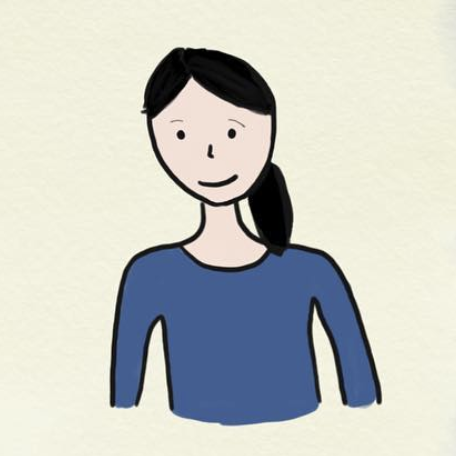
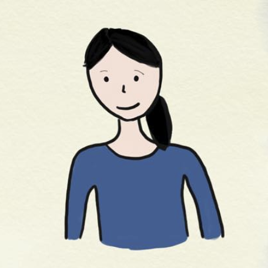

Hi! I'm Joanne.
I'm a recent graduate who studied Mathematical & Computational Science and Computer Science at Stanford, and am currently taking some time off to travel and learn new things before I start my full-time role in August 2018 (San Francisco).
When I'm not working/studying/serving my cat Ellie, I enjoy making stuff-- whether that be drinks for other people, mediocre doodles (linked below, in case you think I'm underselling them), or rather ugly sock dolls.
 
